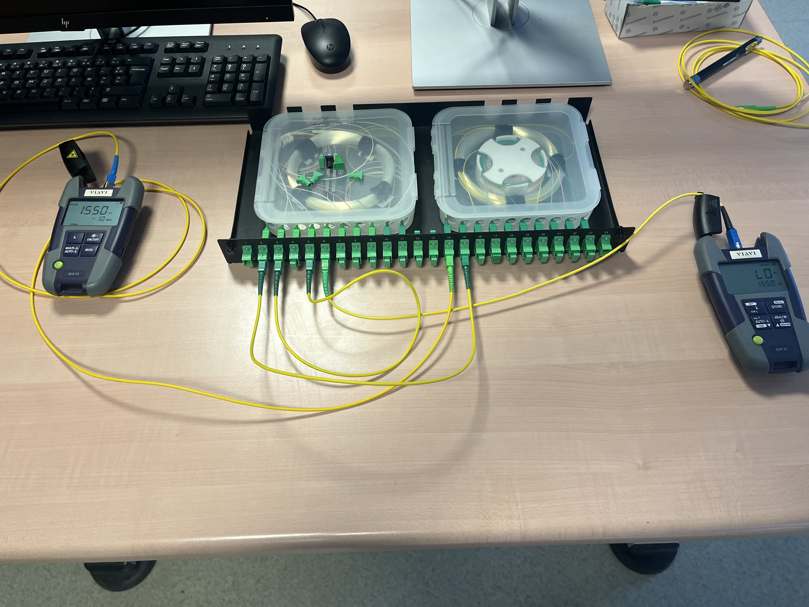
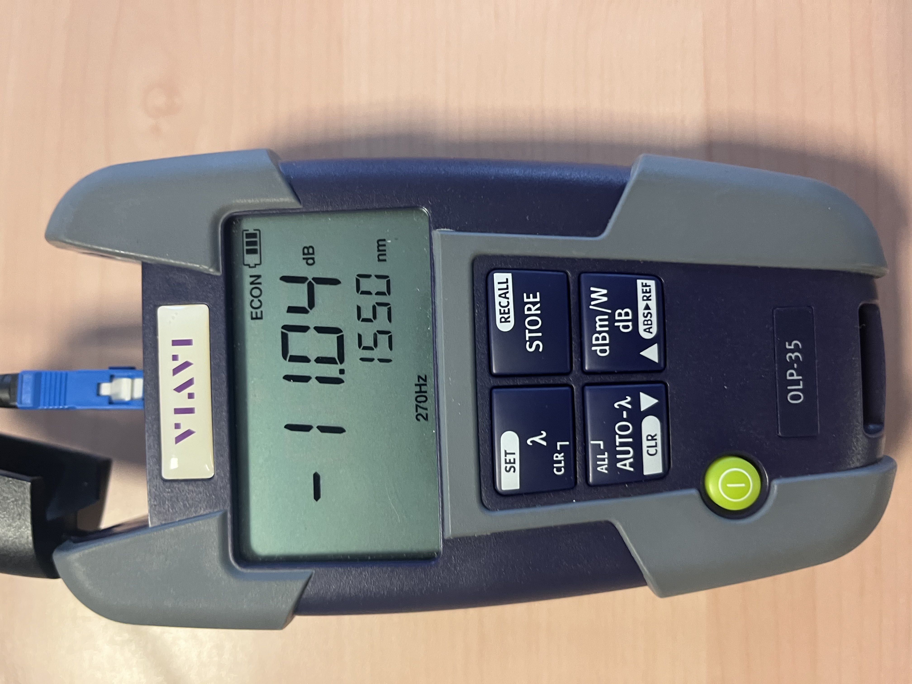

Découverte d'un dispositif de transmission
Description du projet & Contexte
Menée au sein des laboratoires de télécommunications de l'IUT Grand Ouest Normandie (Campus de Caen), cette SAÉ s'est concentrée sur l'évaluation pratique et l'analyse des supports physiques utilisés pour le transport de données. Nous avons étudié de près deux technologies fondamentales du paysage réseau : les liaisons métalliques (cuivre) et les liaisons optiques de type FTTH (Fiber To The Home). L'objectif premier était de s'approprier les protocoles de tests professionnels et d'apprendre à exécuter des mesures et des configurations pour valider la conformité d'une infrastructure réseau selon les exigences réglementaires des opérateurs.
Objectifs et Problématique
La problématique centrale reposait sur la capacité à caractériser l'intégrité d'un canal physique et à détecter ses défauts. Un signal injecté subit de nombreuses dégradations (atténuation, diaphonie, dispersion, coupures). L'enjeu de cette SAÉ était de savoir utiliser avec précision les appareils de mesure de base du technicien de terrain pour diagnostiquer ces perturbations et d'automatiser les processus de vérification pour accélérer la livraison de réseaux conformes.
Apprentissages Critiques (AC) Validés
Ce projet s'articule autour des compétences et des apprentissages critiques suivants :
- Mise en œuvre de RT2 – AC1 : Manipulation d'appareils de laboratoire complexes tels que des oscilloscopes numériques, des générateurs de signaux, des analyseurs de réseau et des photomètres optiques.
- Mise en œuvre de RT2 – AC2 : Utilisation des fonctions de détection automatique de défauts (mode DTF - Distance To Fault) et étalonnage des coefficients de vélocité ou de longueur d'onde pour obtenir des rapports conformes automatiques.
- Mise en œuvre de RT2 – AC3 : Rédaction de comptes-rendus d'ingénierie clairs, associant relevés graphiques, table de marqueurs et interprétations scientifiques des pertes physiques observées.
Mon Rôle et Travail Réalisé
Au sein de mon équipe, j'ai activement participé aux manipulations matérielles, à la configuration des bancs de tests et aux relevés techniques :
Partie 1 : Caractérisation des supports cuivre
À l'aide d'un générateur de fonctions et d'une longue bobine de câble, nous avons simulé l'envoi d'un signal numérique. J'ai configuré l'oscilloscope pour mesurer en temps réel la déformation de l'onde. Ensuite, nous avons employé un analyseur de réseau vectoriel pour localiser précisément des ruptures physiques sur la ligne par calcul de réflectométrie (DTF).

Figure 1 : Poste de manipulation cuivre. Configuration du générateur d'impulsions (à droite) relié à l'oscilloscope numérique Siglent (à gauche) à travers une couronne de câble de test.

Figure 2 : Visualisation à l'oscilloscope de l'atténuation du signal (courbe jaune) par rapport à l'impulsion d'origine (courbe bleue). Validation RT2-AC1.

Figure 3 : Écran du Siglent en mode automatique DTF. Localisation parfaite d'une anomalie impédante à 9,92 mètres avec une perte de -10,42 dB. Validation RT2-AC2.
Partie 2 : Réflectométrie et photométrie sur boucle locale optique (FTTH)
En manipulant un tiroir de brassage de distribution optique, j'ai mesuré l'affaiblissement global d'une liaison à l'aide d'un photomètre portatif. Cette tâche a nécessité le choix de la bonne longueur d'onde (1550 nm) pour correspondre aux fenêtres de transmission minimales de la fibre monomode.

Figure 4 : Banc de test FTTH. Raccordement de jarretières optiques monomodes sur un tiroir équipé de cassettes d'épissurage pour mesurer l'atténuation d'insertion.

Figure 5 : Mesure de puissance optique absolue au photomètre VIAVI OLP-35 affichant une puissance reçue de -11,04 dB sous une longueur d'onde de 1550 nm. Validation RT2-AC1.
Analyse Réflexive et Autoévaluation
Points forts : Maîtrise rapide des interfaces des instruments Siglent et VIAVI. J'ai su faire preuve de minutie, notamment lors du nettoyage des connecteurs optiques à l'alcool isopropylique, évitant ainsi des pertes de signal anormales.
Difficultés rencontrées et solutions : La principale difficulté a été d'interpréter correctement les pics complexes des courbes de réflectométrie sur le cuivre et la fibre optique (FTTH), où chaque connecteur ou soudure crée une rupture d'impédance. Nous avons surmonté cela en calibrant méticuleusement nos appareils (ajustement du facteur de vélocité à 0.66 pour le cuivre en Figure 3) et en confrontant nos résultats empiriques aux seuils théoriques de conformité des normes opérateurs.
Ce que cette SAÉ m'a appris : Cette situation d'apprentissage m'a permis de comprendre concrètement la réalité physique et matérielle qui soutient les couches logiques d'un réseau. J'ai mesuré l'impact direct de la géométrie et de la propreté d'un support sur le débit binaire d'une infrastructure de télécommunication.
Ce que j'aurais pu faire autrement : Nous aurions pu utiliser un injecteur de lumière visible (stylo laser rouge) de manière plus systématique pour repérer visuellement les macro-courbures excessives dans les cassettes d'épissurage de la Figure 4 avant de lancer les mesures automatiques au photomètre.
Positionnement personnel : Grâce à la réussite des diagnostics DTF et des bilans de puissance optique, je me positionne sur un niveau de Maîtrise Avancée sur cette compétence d'ingénierie physique.